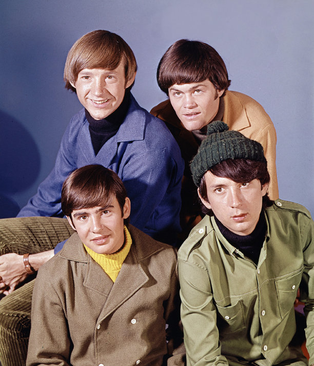
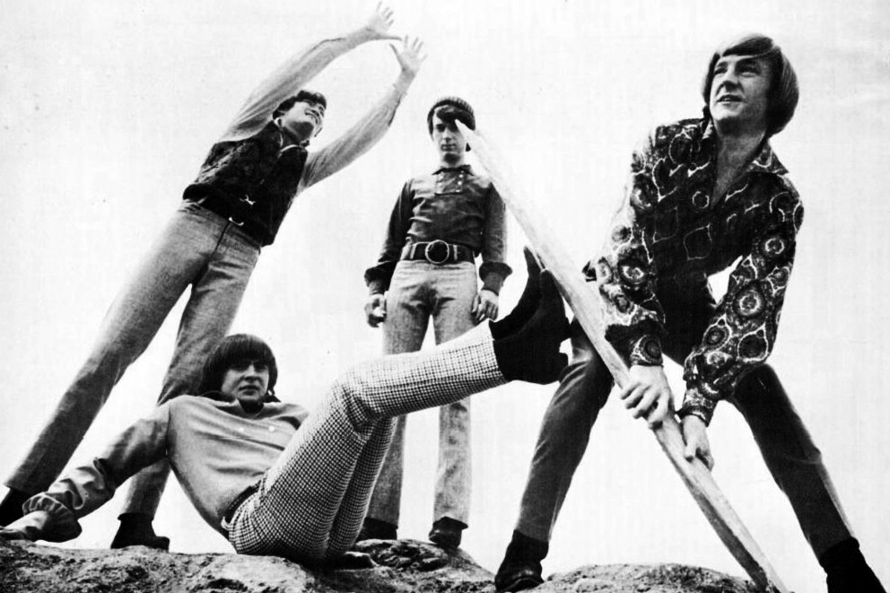
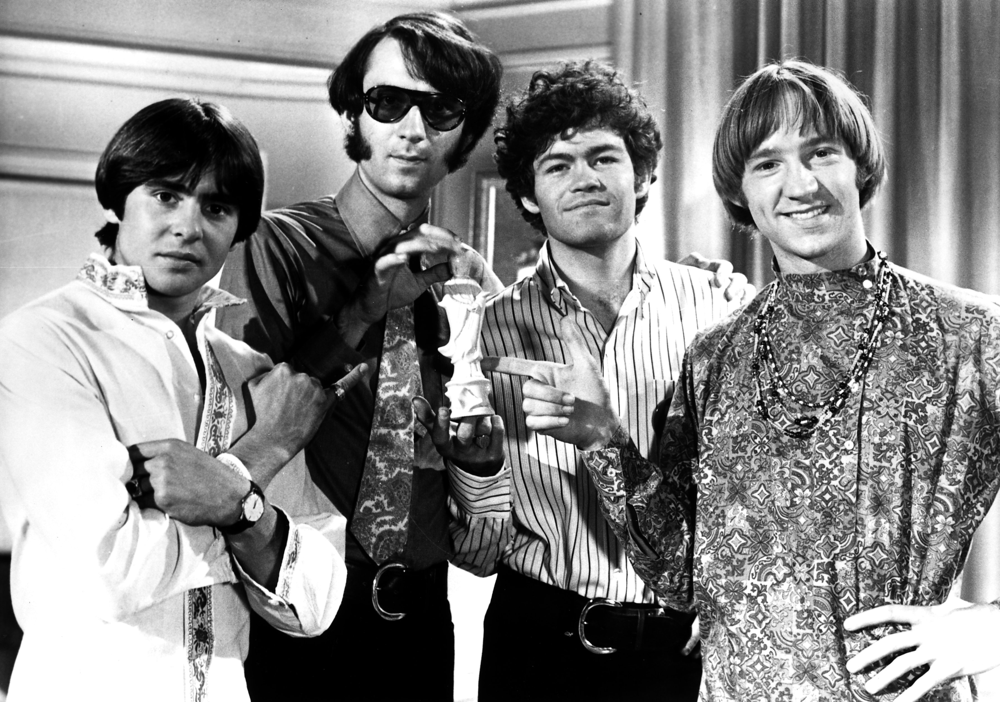

Meet The Monkees
A Brief History of The Monkees
 The Monkees were an American rock and pop band originally active between 1966 and 1971, with reunion albums
and tours in the decades that followed. They were formed in Los Angeles in 1965 by Bob Rafelson and Bert Schneider for the American television series The Monkees which aired from 1966 to 1968. The musical acting quartet was
composed of Americans Micky Dolenz, Michael Nesmith, and Peter Tork; and British actor and singer Davy Jones. The band's music was initially supervised by producer Don Kirshner, backed by the songwriting duo of Tommy Boyce and Bobby
Hart.
The Monkees were an American rock and pop band originally active between 1966 and 1971, with reunion albums
and tours in the decades that followed. They were formed in Los Angeles in 1965 by Bob Rafelson and Bert Schneider for the American television series The Monkees which aired from 1966 to 1968. The musical acting quartet was
composed of Americans Micky Dolenz, Michael Nesmith, and Peter Tork; and British actor and singer Davy Jones. The band's music was initially supervised by producer Don Kirshner, backed by the songwriting duo of Tommy Boyce and Bobby
Hart.
The four actor-musicians were allowed only limited roles in the recording studio for the first few months of their five-year career as "The Monkees". This was due in part to the amount of time required to film the television series. Nonetheless, Nesmith did compose and produce some songs from the beginning, and Peter Tork contributed limited guitar work on the sessions produced by Nesmith. They eventually fought for the right to collectively supervise all musical output under the band's name. The television show was canceled in 1968, but the band continued to record music through 1971.
A revival of interest in the television show came in 1986, which led to a series of reunion tours and new records. The group reunited and toured several times with varying degrees of success.
Davy Jones died suddenly on February 29, 2012, but the surviving members reunited for a tour in November–December 2012 and again in 2013 for a 24-date tour. The Monkees continued to tour through their 2016 50th Anniverary, with Dolenz and Tork forming the core of the band and Nesmith continuing to join them occasionally.
Dolenz described the Monkees as initially being "a TV show about an imaginary band… that wanted to be the Beatles that was never successful". Ironically, the actor-musicians became one of the most successful bands of the 1960s. The Monkees have sold more than 50 million records worldwide and had international hits, including "Last Train to Clarksville", "Pleasant Valley Sunday", "Daydream Believer", and "I'm a Believer". Newspapers and magazines reported that the Monkees outsold the Beatles and the Rolling Stones combined in 1967, but Nesmith claims in his autobiography Infinite Tuesday that it was a lie that he told an Australian reporter.
Conception
Aspiring filmmaker Bob Rafelson developed the initial idea for The Monkees in 1962, but was unsuccessful in selling the series. He had tried selling it to Revue, the television division of Universal Pictures. In May 1964, while working at Screen Gems, Rafelson teamed up with Bert Schneider, whose father, Abraham Schneider, headed the Colpix Records and Screen Gems Television units of Columbia Pictures. Rafelson and Schneider ultimately formed Raybert Productions.
The Beatles' film A Hard Day's Night inspired Rafelson and Schneider to revive Rafelson's idea for The Monkees. As "The Raybert Producers", they sold the show to Screen Gems Television on April 16, 1965. Rafelson and Schneider's original idea was to cast an existing New York folk rock group, the Lovin' Spoonful, who were not widely known at the time. However, John Sebastian had already signed the band to a record contract, which would have denied Screen Gems the right to market music from the show.
On July 14, 1965, The Hollywood Reporter stated that future band member Davy Jones was expected to return to the United States in September 1965 after a trip to England "to prepare for TV pilot for Bert Schneider and Bob Rafelson". Jones had previously starred as the Artful Dodger in the Broadway theatre show Oliver!, which debuted on December 17, 1962, and his performance was later seen on The Ed Sullivan Show the same night as the Beatles' first appearance on that show, February 9, 1964. He was nominated for a Tony Award for Best Featured Actor in a Musical in 1963. In September 1964 he was signed to a long-term contract to appear in TV programs for Screen Gems, make feature films for Columbia Pictures and to record music for the Colpix label. Rafelson and Schneider already had him in mind for their project after their plans for the Lovin' Spoonful fell through; when they chose him, he was essentially a proto-star looking for his lucky break.
{kind=link}
On September 8–10, 1965, Daily Variety and The Hollywood Reporter ran an ad to cast the remainder of the band/cast members for the TV show:
Madness!! Auditions. Folk & Roll Musicians-Singers for acting roles in new TV series. Running Parts for 4 insane boys, age 17-21. Want spirited Ben Frank's types. Have courage to work. Must come down for interview.
Out of 437 applicants, the other three chosen for the cast of the TV show were Michael Nesmith, Peter Tork and Micky Dolenz. Nesmith had been working as a musician since early 1963 and had been recording and releasing music under various names, including Michael Blessing and "Mike & John & Bill" and had studied drama in college. Of the final four, Nesmith was the only one who actually saw the ad in Daily Variety and The Hollywood Reporter. Tork, the last to be chosen, had been working the Greenwich Village scene as a musician, and had shared the stage with Pete Seeger; he learned of The Monkees from Stephen Stills, whom Rafelson and Schneider had rejected as a songwriter. Dolenz was an actor (his father was veteran character actor George Dolenz) who had starred in the TV series Circus Boy as a child, using the stage name Mickey Braddock, and he had also played guitar and sung in a band called the Missing Links before the Monkees, which had recorded and released a very minor single, "Don't Do It". By that time he was using his real name; he found out about The Monkees through his agent.
From Television to Concert Stage
 In assigning instruments for purposes of the television show, a dilemma arose as to which of the four would be the drummer. Both Nesmith (a skilled guitarist and bassist) and Tork (who could play several stringed and keyboard instruments)
were peripherally familiar with the instrument but both declined to give the drum set a try. Jones knew how to play the drums and tested well enough initially on the instrument, but the producers felt that, behind a drum kit, the camera
would exaggerate his short stature and make him virtually hidden from view. Dolenz (who only knew how to play the guitar) was assigned to become the drummer. Tork taught Dolenz his first few beats on the drums, enough for him
to fake his way through filming the pilot, but he was soon taught how to play properly. The lineup for the TV show most frequently featured Nesmith on guitar, Tork on bass, Dolenz on drums and Jones as a frontman, singer and
percussionist. This, however, is in opposition to the lineup which would have made the most sense based upon the members' musical strengths. For example, Tork was actually a more experienced guitar player than Nesmith, while Nesmith
had at one time specifically trained on the bass. While Jones certainly had a strong lead voice and sings lead on several Monkees recordings, Dolenz's voice is regarded, particularly by Nesmith, as one of the most distinctive in popular
music history and a hallmark of the Monkees' sound. This theoretical lineup was actually depicted once, in the music video for the band's song "Words", which shows Jones on drums, Tork playing lead guitar, Nesmith on bass and Dolenz
fronting the group. In concert appearances Tork also took much of the guitar duties, even in appearances with Nesmith, and Dolenz often plays rhythm guitar on stage.
In assigning instruments for purposes of the television show, a dilemma arose as to which of the four would be the drummer. Both Nesmith (a skilled guitarist and bassist) and Tork (who could play several stringed and keyboard instruments)
were peripherally familiar with the instrument but both declined to give the drum set a try. Jones knew how to play the drums and tested well enough initially on the instrument, but the producers felt that, behind a drum kit, the camera
would exaggerate his short stature and make him virtually hidden from view. Dolenz (who only knew how to play the guitar) was assigned to become the drummer. Tork taught Dolenz his first few beats on the drums, enough for him
to fake his way through filming the pilot, but he was soon taught how to play properly. The lineup for the TV show most frequently featured Nesmith on guitar, Tork on bass, Dolenz on drums and Jones as a frontman, singer and
percussionist. This, however, is in opposition to the lineup which would have made the most sense based upon the members' musical strengths. For example, Tork was actually a more experienced guitar player than Nesmith, while Nesmith
had at one time specifically trained on the bass. While Jones certainly had a strong lead voice and sings lead on several Monkees recordings, Dolenz's voice is regarded, particularly by Nesmith, as one of the most distinctive in popular
music history and a hallmark of the Monkees' sound. This theoretical lineup was actually depicted once, in the music video for the band's song "Words", which shows Jones on drums, Tork playing lead guitar, Nesmith on bass and Dolenz
fronting the group. In concert appearances Tork also took much of the guitar duties, even in appearances with Nesmith, and Dolenz often plays rhythm guitar on stage.
Unlike most television shows of the time, The Monkees episodes were written with many setups, requiring frequent breaks to prepare the set and cameras for short bursts of filming. Some of the "bursts" are considered proto-music videos, inasmuch as they were produced to sell the records. The Monkees Tale author Eric Lefcowitz noted that the Monkees were—first and foremost—a video group. The four actors would spend 12-hour days on the set, many of them waiting for the production crew to do their jobs. Noticing that their instruments were left on the set unplugged, the four decided to turn them on and start playing.
After working on the set all day, the Monkees (usually Dolenz or Jones) would be called into the recording studio to cut vocal tracks. As the band was essential to this aspect of the recording process, there were few limits on how long they could spend in the recording studio, and the result was an extensive catalogue of unreleased recordings.
On tour
Pleased with their initial efforts, Columbia (over Kirshner's objections) planned to send the Monkees out to play live concerts. The massive success of the series—and its spin-off records—created intense pressure to mount a touring version of the group. Against the initial wishes of the producers, the band went out on the road and made their debut live performance in December 1966 in Hawaii.
 They had no time to rehearse a live performance except between takes on set. They worked on the TV series all day, recorded in the studio at night and slept very little. The weekends were usually filled with special appearances or filming
of special sequences. These performances were sometimes used during the actual series. The episode "Too Many Girls (Fern and Davy)" opens with a live version of "(I'm Not Your) Steppin' Stone" being performed as the scene was shot.
One entire episode was filmed featuring live music. The last show of the premiere season, "Monkees on Tour", was shot in a documentary style by filming a concert in Phoenix, Arizona, on January 21, 1967. Bob Rafelson wrote and directed
the episode.
They had no time to rehearse a live performance except between takes on set. They worked on the TV series all day, recorded in the studio at night and slept very little. The weekends were usually filled with special appearances or filming
of special sequences. These performances were sometimes used during the actual series. The episode "Too Many Girls (Fern and Davy)" opens with a live version of "(I'm Not Your) Steppin' Stone" being performed as the scene was shot.
One entire episode was filmed featuring live music. The last show of the premiere season, "Monkees on Tour", was shot in a documentary style by filming a concert in Phoenix, Arizona, on January 21, 1967. Bob Rafelson wrote and directed
the episode.
In DVD commentary tracks included in the Season One release, Nesmith admitted that Tork was better at playing guitar than bass. In Tork's commentary he stated that Jones was a good drummer, and had the live performance lineups been based solely on playing ability, it should have been Tork on guitar, Nesmith on bass and Jones on drums, with Dolenz taking the fronting role. The four Monkees performed all the instruments and vocals for most of the live set. The most notable exceptions were during each member's solo sections where, during the December 1966 – May 1967 tour, they were backed by the Candy Store Prophets. During the summer 1967 tour of the United States and the UK (from which the Live 1967 recordings are taken), they were backed by a band called the Sundowners. The Monkees toured Australia and Japan in 1968. The results were far better than expected. Wherever they went, the group was greeted by scenes of fan adulation reminiscent of Beatlemania. This gave the singers increased confidence in their fight for control over the musical material chosen for the series.
With Jones sticking primarily to vocals and tambourine (except when filling in on the drums when Dolenz came forward to sing a lead vocal), the Monkees' live act constituted a classic power trio of electric guitar, electric bass and drums (except when Tork passed the bass part to Jones or one of the Sundowners in order to take up the banjo or electric keyboards).
The Monkees Go Independent
Phil Spector, 1968 Pop Chronicles interview. Independence Headquarters and Pisces, Aquarius, Capricorn & Jones The Monkees wanted to pick the songs they sang and play on the songs they recorded, and be the Monkees. With Kirshner dismissed as musical supervisor, in late February 1967 Nesmith hired former Turtles bassist Douglas Farthing Hatlelid, who was better known by his stage name Chip Douglas, to produce the next Monkees album, which was to be the first Monkees album where they were the only musicians, outside of most of the bass, and the horns. Douglas was responsible for both music presentation—actually leading the band and engineering recordings—and playing bass on most of Headquarters. This album, along with their next, Pisces, Aquarius, Capricorn & Jones Ltd., would serve as the soundtrack to the second season of the television show.
In March 1967 "The Girl I Knew Somewhere", composed by Nesmith and performed by Dolenz, Nesmith, Tork and bassist John London, was issued as the B-side to the Monkees' third single, "A Little Bit Me, a Little Bit You", and it rose to No. 39 on the charts. The A-side rose to No. 2.
Issued in May 1967, Headquarters had no songs released as singles in the United States, but it would still be their third No. 1 album in a row, with many of its songs played on the second season of the television show. Having a more country-folk-rock sound than the pop outings under Kirshner, Sandoval notes in the 2007 Deluxe Edition reissue from Rhino that the album rose to No. 1 on May 24, 1967, with the Beatles' Sgt. Pepper released the following week, which would knock Headquarters to the #2 spot on the charts for the next 11 weeks, the same weeks which would become known by the counterculture as the "Summer of Love". A selection that Dolenz wrote and composed, "Randy Scouse Git", was issued under the title "Alternate Title" (owing to the controversial nature of its original title) as a single internationally, where it rose to No. 2 on the charts in the UK and Norway, and in the top 10 in other parts of the world. Tork's "For Pete's Sake" would be used as the closing theme for the television show. Nesmith would continue in his country-rock leanings, adding the pedal steel guitar to three of the songs, along with contributing his self-composed countrified-rock song "Sunny Girlfriend". Tork added the banjo to the Nesmith-composed rocker "You Told Me", a song whose introduction was satirical of the Beatles' "Taxman". Other notable songs are the Nesmith-composed straightforward pop-rock song "You Just May Be the One", used on the television series during both seasons, along with "Shades of Gray" (with piano introduction written by Tork), "Forget that Girl" and "No Time", used in the television show. The Monkees wrote five of the 12 songs on the album, plus the two tracks "Band 6" and "Zilch". The Los Angeles Times, when reviewing Headquarters, stated that "The Monkees Upgrade Album Quality" and that "The Monkees are getting better. Headquarters has more interesting songs and a better quality level [than previous albums] . . . None of the tracks is a throwaway . . . The improvement trend is laudable."
{kind=link}
The high of Headquarters was short-lived, however. Recording and producing as a group was Tork's major interest and he hoped that the four would continue working together as a band on future recordings, according to the liner notes of the 2007 Rhino reissue of Pisces, Aquarius, Capricorn & Jones Ltd.. "Cuddly Toy" on Pisces, Aquarius, Capricorn & Jones Ltd. would mark the last time Dolenz, who originally played guitar before the Monkees, would make a solo stand as a studio drummer. In commentary for the DVD release of the second season of the show, Tork said that Dolenz was "incapable of repeating a triumph." Having been a drummer for one album, Dolenz lost interest in being a drummer and indeed, he largely gave up playing instruments on Monkees recordings (producer Chip Douglas also had identified Dolenz's drumming as the weak point in the collective musicianship of the quartet, having to splice together multiple takes of Dolenz's "shaky" drumming for final use). By this point the four did not have a common vision regarding their musical interests, with Nesmith and Jones also moving in different directions—Nesmith following his country/folk instincts and Jones reaching for Broadway-style numbers. The next three albums featured a diverse mixture of musical style influences, including country-rock, folk-rock, psychedelic rock, soul/R&B, guitar rock, Broadway and English music hall sensibilities.
At the height of their fame in 1967, they also suffered from a media backlash. Nesmith states in the 2007 Rhino reissue of Pisces, Aquarius, Capricorn & Jones Ltd., "Everybody in the press and in the hippie movement had got us into their target window as being illegitimate and not worthy of consideration as a musical force [or] certainly any kind of cultural force. We were under siege; wherever we went there was such resentment for us. We were constantly mocked and humiliated by the press. We were really gettin' beat up pretty good. We all knew what was going on inside. Kirshner had been purged. We'd gone to try to make Headquarters and found out that it was only marginally okay and that our better move was to just go back to the original songwriting and song-making strategy of the first albums except with a clear indication of how [the music] came to be . . . The rabid element and the hatred that was engendered is almost impossible to describe. It lingers to this day among people my own age." Tork disagreed with Nesmith's assessment of Headquarters, stating, "I don't think the Pisces album was as groovy to listen to as Headquarters. Technically it was much better, but I think it suffers for that reason."
With Pisces, Aquarius, Capricorn & Jones Ltd., the Monkees' fourth album, they went back to making music for the television show, except that they had control over the music and which songs would be chosen. They used a mixture of themselves and session musicians on the album. They would use this strategy of themselves playing, plus adding session musicians (including the Wrecking Crew, Louie Shelton, Glen Campbell, members of the Byrds and the Association, drummer "Fast" Eddie Hoh, Lowell George, Stephen Stills, Buddy Miles, and Neil Young) throughout their recording career, relying more on session musicians when the group became temporarily estranged after Pisces, Aquarius, Capricorn & Jones Ltd. and recorded some of their songs separately. With Pisces, Aquarius, Capricorn & Jones Ltd., the Monkees' fourth album, they went back to making music for the television show, except that they had control over the music and which songs would be chosen. They used a mixture of themselves and session musicians on the album. They would use this strategy of themselves playing, plus adding session musicians (including the Wrecking Crew, Louie Shelton, Glen Campbell, members of the Byrds and the Association, drummer "Fast" Eddie Hoh, Lowell George, Stephen Stills, Buddy Miles, and Neil Young) throughout their recording career, relying more on session musicians when the group became temporarily estranged after Pisces, Aquarius, Capricorn & Jones Ltd. and recorded some of their songs separately.
{kind=link}
Using Chip Douglas again to produce, Pisces, Aquarius, Capricorn & Jones Ltd., released in November 1967 was the Monkees' fourth No. 1 album in a row, staying at No. 1 for 5 weeks, and was also their last No. 1 album. It featured the hit single "Pleasant Valley Sunday" (#3 on charts) b/w "Words" (#11 on charts), the A-side had Nesmith on electric guitar/backing vocals, Tork on piano/backing vocals, Dolenz on lead vocals and possibly guitar and Jones on backing vocals; the B-side had Micky and Peter alternating lead vocals, Peter played organ, Mike played guitar, percussion, and provided backing vocals, and Davy provided percussion and backing vocals. Other notable items about this album is that it features an early use of the Moog Synthesizer on two tracks, the Nesmith-penned "Daily Nightly", along with "Star Collector". All of its songs, except for two, were featured on the Monkees' television show during the second season.
Their next single, "Daydream Believer" (with a piano intro written by Tork), would shoot to No. 1 on the charts, letting the Monkees hold the No. 1 position in the singles chart and the album chart with Pisces simultaneously. "Daydream Believer" used the non-album track "Goin' Down" as its B-side, which featured Nesmith and Tork on guitar with Micky on lead vocals.
During their 1986 reunion, both Headquarters and Pisces, Aquarius, Capricorn & Jones Ltd. would return to the charts for 17 weeks.
Good Times! and 50th Anniverary:2015-present
 Dolenz and Tork toured as the Monkees in 2015 without Nesmith's participation. Nesmith stated that he was busy with other ventures, although Dolenz said that "He's always invited." In February 2016, Dolenz announced that the Monkees would
be releasing a new album, titled Good Times!, as a celebration of their 50th anniversary. Good Times!, produced by Adam Schlesinger of Fountains of Wayne, features contributions by all three surviving members, as well
as a posthumous contribution from Jones. The album was released in May 2016 to considerable success, reaching No. 14 on the Billboard 200 and generally favorable reviews.
Dolenz and Tork toured as the Monkees in 2015 without Nesmith's participation. Nesmith stated that he was busy with other ventures, although Dolenz said that "He's always invited." In February 2016, Dolenz announced that the Monkees would
be releasing a new album, titled Good Times!, as a celebration of their 50th anniversary. Good Times!, produced by Adam Schlesinger of Fountains of Wayne, features contributions by all three surviving members, as well
as a posthumous contribution from Jones. The album was released in May 2016 to considerable success, reaching No. 14 on the Billboard 200 and generally favorable reviews.
With the release of the album, the band, featuring Dolenz and Tork, commenced their 50th Anniversary Tour. Nesmith did not participate in most of the tour, again citing other commitments. He did, however, make a few appearances throughout the summer of 2016, appearing virtually via Skype to perform "Papa Gene's Blues" at one concert and in person for a four-song encore at another. In September, he replaced Tork on the tour for two dates while Tork attended to a family emergency. After Tork returned to the tour, Nesmith performed with the band for a concert at the Pantages Theatre in Hollywood on September 16, which he stated would likely be his final concert appearance with the Monkees. Dolenz and Tork's tour announced dates to the end of the year, including concerts in Australia and New Zealand.
After the end of the 50th Anniversary Tour, Dolenz, Tork, and Nesmith spent 2017 engaging in solo activities. In 2018, Nesmith toured with a revived version of the First National Band and stated that he was in negotiations with promoters to tour again with Dolenz later in the summer. On February 20, the tour was announced as "The Monkees Present: The Mike and Micky Show", their first tour as a duo. The pair will play Monkees music and promote the tour under the Monkees banner, but Nesmith stated that "there's no pretense there about Micky and I being the Monkees. We're not."